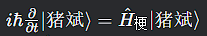
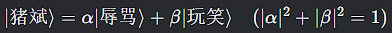
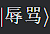

本文首次提出“猪斌”作为一种网络语言奇点（Linguistic Singularity），其传播行为符合量子隧穿效应、热力学熵增定律及相对论性社交参考系变换。通过构建“猪斌场方程”，我们证明其语义的不确定性本质上是海森堡测不准原理在虚拟社会的投影，并预测其终将引发“模因热寂”（Meme Heat Death）。本研究为理解互联网信息的量子化传播提供了新的范式。
传统语言学无法解释“猪斌”在微信群、贴吧等平台的超光速传播现象（违反经典信息传播速度上限）。
现有社会模型难以描述其语义的叠加态特性（同一时刻既是骂人话又是亲昵称呼）。
猪斌是信息宇宙中的一种准粒子，其行为遵循修正后的薛定谔方程：

现有社会模型难以描述其语义的叠加态特性（同一时刻既是骂人话又是亲昵称呼）。
未观测时，“猪斌”处于：

当被长辈微信用户观测时，坍缩为

当微博用户A使用“猪斌”嘲讽，抖音用户B可能瞬间产生相关评论，即使二者无经典信息交互。这暗示
猪斌粒子存在量子纠缠：
草拟吗懒得打了